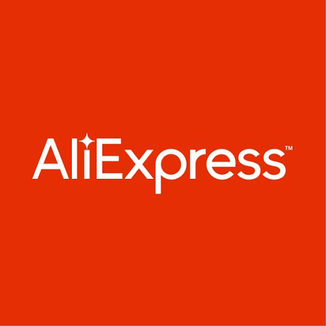

AliExpress, es una de las principales plataformas de comercio electrónico a nivel global, anuncia el lanzamiento de su nuevo marketplace en México, reafirmando su compromiso con el mercado local y ofrecer a los vendedores mexicanos una nueva oportunidad de crecimiento.
Este lanzamiento busca potenciar a los emprendedores y comerciantes del país con herramientas innovadoras y beneficios exclusivos, como 90 días sin comisiones para nuevos vendedores, envíos gratuitos por tiempo limitado, subsidios para participar en campañas de AliExpress, atención personalizada gratuita en diferentes idiomas y un centro de servicios especializado para vendedores locales.
Los consumidores también se beneficiarán con una experiencia de compra mejorada, que incluye entregas más rápidas, de cinco a siete días hábiles, una mayor variedad de productos locales a precios competitivos y la posibilidad de apoyar a la economía mexicana comprando directamente a vendedores nacionales.
Para optimizar la logística y mejorar los tiempos de entrega, AliExpress introduce la solución de entrega local que permite una mejor gestión de envíos. Entre sus principales ventajas destacan la reducción en los tiempos de entrega, la optimización de operaciones con vendedores locales, tarifas preferenciales y una mayor precisión en el seguimiento de paquetes.
En su primer año de operación, AliExpress planea integrar a nuevos vendedores locales y está explorando opciones de financiamiento para impulsar su crecimiento. La plataforma continuará con su estrategia de campañas promocionales, subsidios y atención personalizada, además de desarrollar nuevas categorías y fortalecer alianzas logísticas y ofrecer opciones de pago más accesibles para los consumidores.
La plataforma ofrece opciones de compra más accesibles al integrar vendedores locales, lo que permite a los consumidores adquirir productos sin costos adicionales de importación y con tiempos de entrega más competitivos. Esta estrategia no solo beneficia a los compradores, sino que también impulsa a los emprendedores mexicanos al brindarles una plataforma con mayor visibilidad y herramientas para fortalecer su negocio.
Actualmente, AliExpress cuenta con millones de usuarios activos en México y se ha consolidado como una de las plataformas de compra más populares, ubicándose dentro del top 5 de aplicaciones de compras más descargadas. Los consumidores pasan en promedio una hora diaria en la plataforma, explorando una amplia variedad de productos.
Con este lanzamiento, AliExpress reafirma su compromiso con la innovación y la accesibilidad, garantizando una experiencia de compra mejorada para millones de usuarios en México y brindando nuevas oportunidades de negocio a vendedores locales.